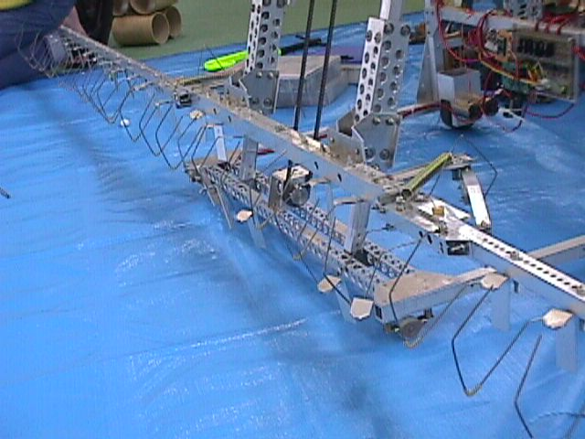
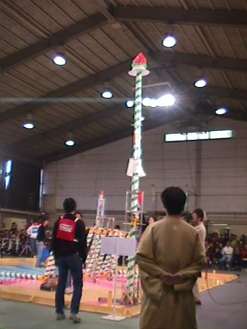
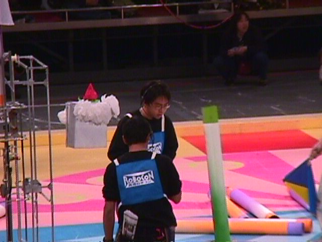

SCIENCE CLUB
マシン名：Transfix
01年度、私たちの製作したマシンの名前は「transfix」。
日本語で「串刺し」、親機のろうそくを突き刺して立てる「串」に由来します。
3台のマシンに別れていて、一度に11本のろうそくを同時に立てる事の出来る親機、
この年から操作方法が無線制御に変わり、このマシンも赤外線で制御されていました。
結果は、東北大会準優勝、全国大会でも準優勝。
また東北・全国ともに７２点という全国最高得点を打ち出しました。
妨害に弱い作りだったのは反省すべき点だったかも。
応援してくれたみなさん、学校宛にメールを出してくださったみなさんありがとうございました。
|  |  |  |